Store Flow - Referencias Sprintasource-01.jpg - 3840 x 6664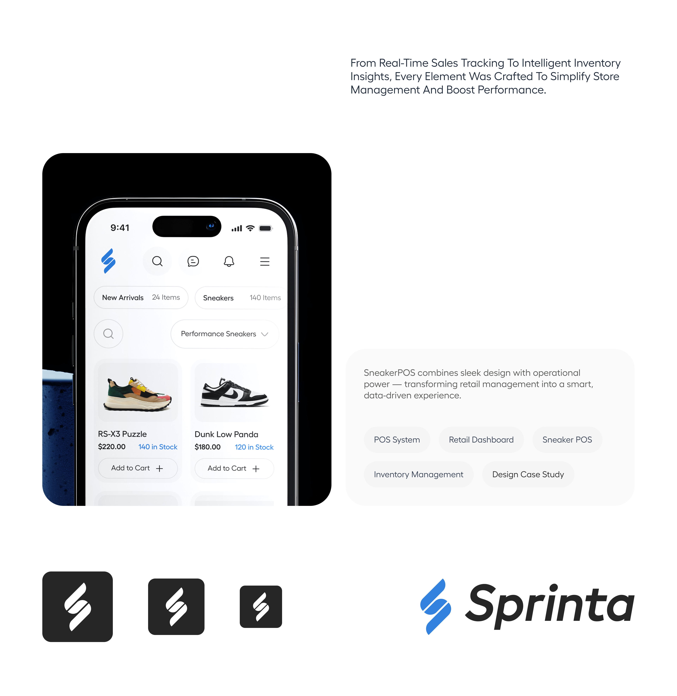
source-02.jpg - 3840 x 3946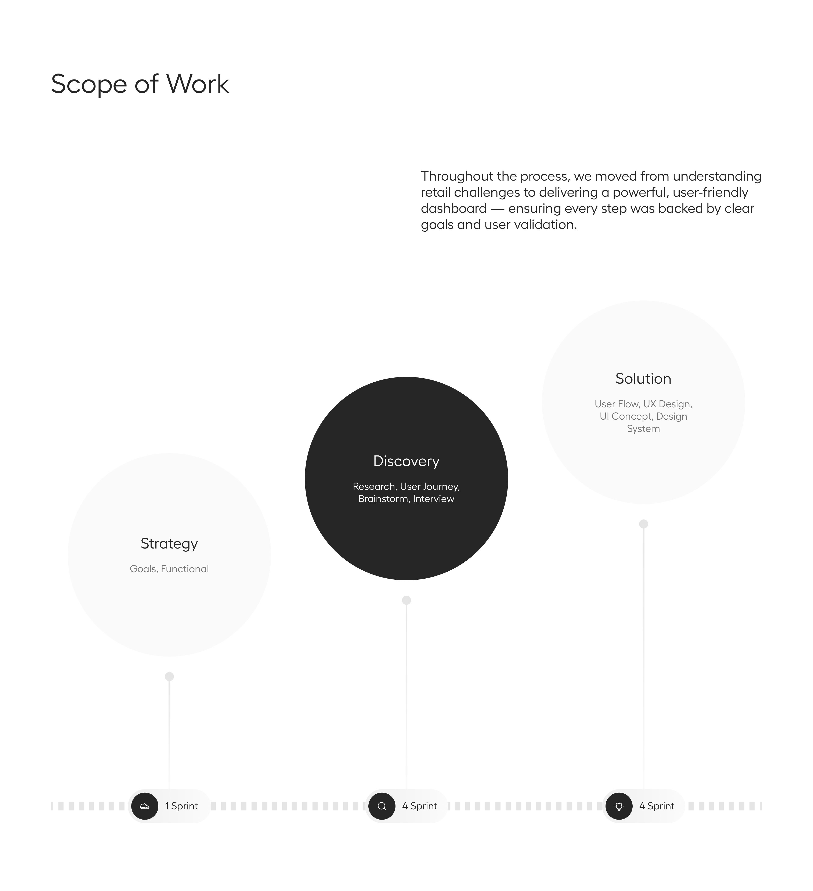
source-03.jpg - 3840 x 4204source-04.jpg - 3840 x 3840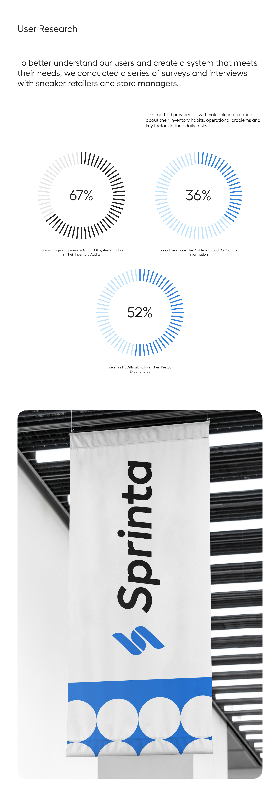
source-05.jpg - 2222 x 6360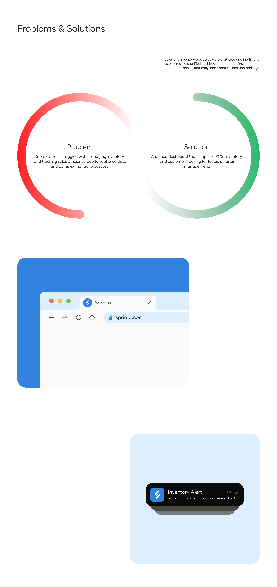
source-06.jpg - 3840 x 8126source-07.jpg - 2222 x 2774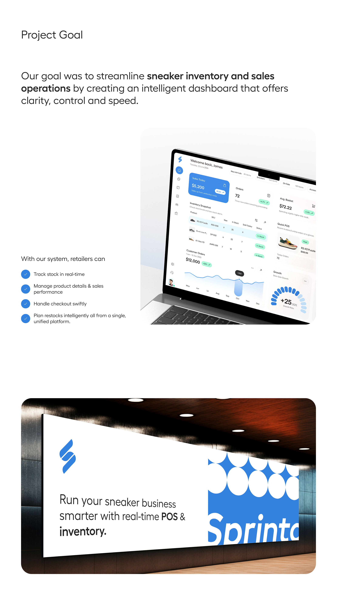
source-08.jpg - 2222 x 3970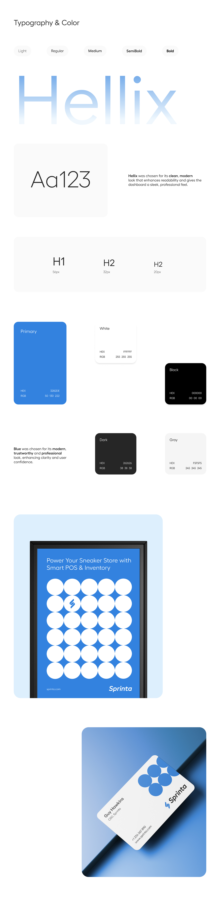
source-09.jpg - 2000 x 8157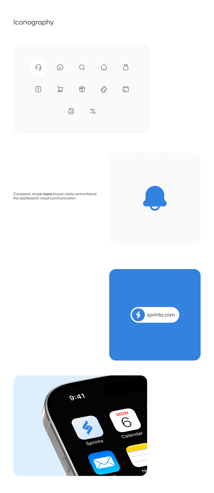
source-10.jpg - 3840 x 8828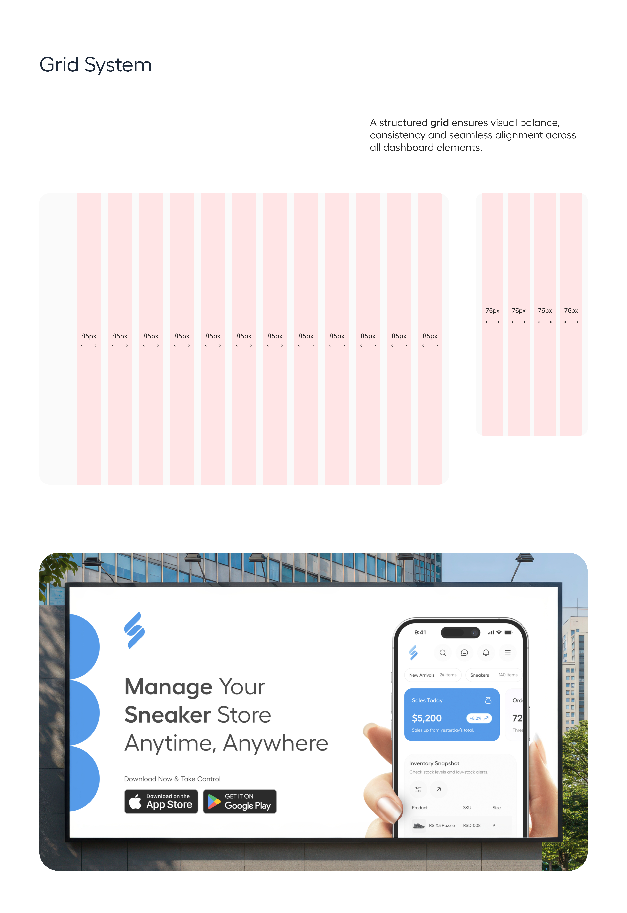
source-11.jpg - 3840 x 5594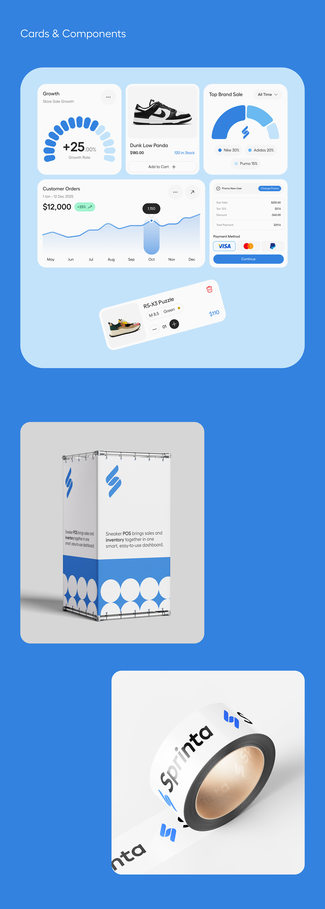
source-12.jpg - 2222 x 6193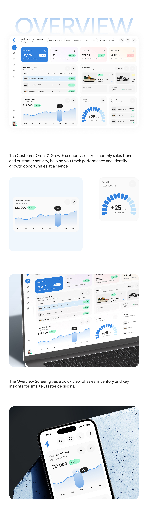
source-13.jpg - 2000 x 6842source-14.jpg - 2222 x 7473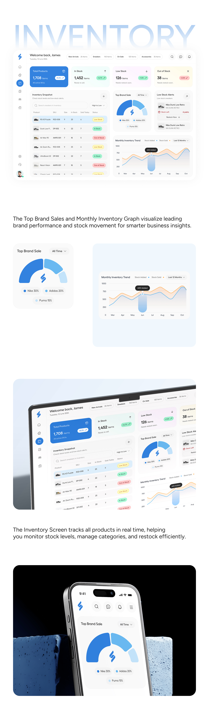
source-15.jpg - 2222 x 7573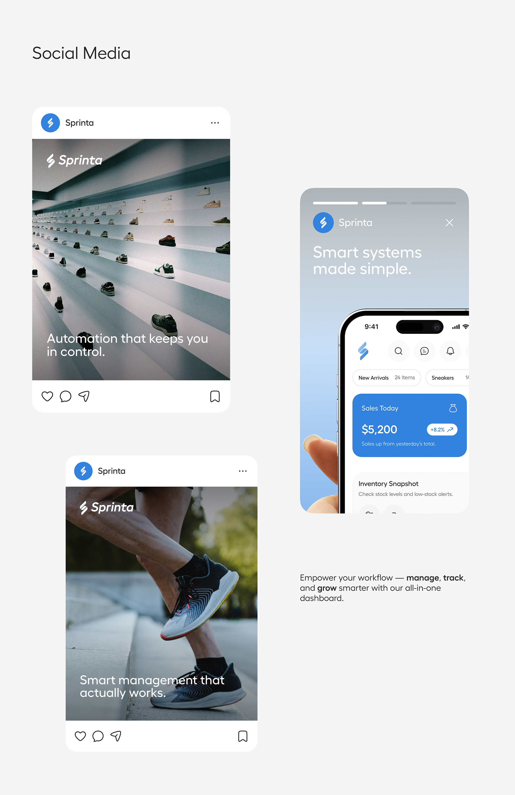
source-16.jpg - 2222 x 3424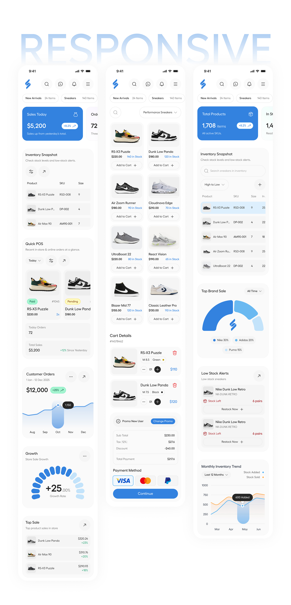
source-17.jpg - 2222 x 4615source-18.jpg - 3840 x 3504source-19.jpg - 3840 x 3522